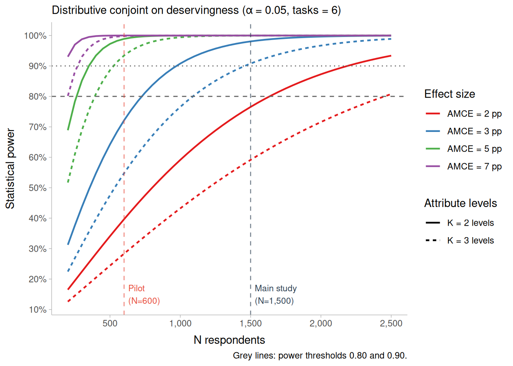

![]()
| N respondents | N profiles | MDE, K=2 attribute | MDE, K=3 attribute |
|---|---|---|---|
| 500 | 6,000 | 3.6 pp | 4.4 pp |
| 600 | 7,200 | 3.3 pp | 4 pp |
| 700 | 8,400 | 3.1 pp | 3.7 pp |
6 Introduction
Entitlement to welfare provision is rarely unconditional. Even in solidaristic systems, access to social goods rests on normative judgments about who deserves collective support and on what grounds, what the literature terms conditional solidarity and, at the individual level, deservingness (Meuleman et al., 2020; Oorschot, 2000). A growing experimental literature has mapped how citizens weigh deservingness criteria such as need, control, reciprocity, attitude, and identity (Dietrich et al., 2026; Gilgen, 2022; Knotz et al., 2022). Yet most of this work asks respondents to evaluate claimants in isolation or to choose between them in binary forced-choice tasks, without confronting the distributive trade-offs that scarce resources impose. When allocating more to one claimant necessarily means allocating less to another, the relative weight citizens place on competing criteria may diverge sharply from what attitudinal or forced-choice measures capture. This study addresses that gap by embedding the deservingness framework in a distributive allocation task under genuine scarcity.
We administer a pre-registered paired-profile distributive conjoint experiment to a Chilean sample, adapting Gilgen’s (2022) Distributional Survey Experiment. Respondents act as members of a university committee dividing a fixed first-year scholarship fund between two applicants via a continuous slider, so that giving more to one means giving less to the other. Applicant profiles are built on the recast NICER scheme (Knotz et al., 2022), which integrates and refines van Oorschot’s CARIN criteria, and vary need, control, effort, reciprocity, attitude, identity, and sex. Chile offers a demanding test case: its higher education system combines some of the highest private expenditure shares in the OECD with acute stratification by origin, and its population holds unusually strong meritocratic beliefs relative to its level of inequality (Castillo et al., 2023). If need dominates allocations even here, its primacy as a distributive principle appears robust; if effort and control prevail, this reveals how commodification and meritocratic ideology jointly reshape distributive judgments.
7 Study Information
7.1 Research question
To what extent do deservingness criteria—need, control, effort, reciprocity, attitude, and identity—shape how citizens allocate scarce higher education scholarships between competing applicants in Chile?
7.2 Hypotheses
7.2.1 Main effects
H_1 (Need): Applicants from households that struggle to make ends meet (Dificultad) will receive a larger share than applicants from financially comfortable households (Holgura).
H_2 (Effort): Applicants who study more than their peers will receive a larger share than those who study the same as or less than their peers.
H_3 (Control): Applicants whose need for the scholarship is outside their control (having applied to other scholarships without securing funding) will receive a larger share than applicants whose need reflects a controllable failure (not having applied on time).
H_4 (Reciprocity): Applicants who have contributed to their community through volunteering will receive a larger share than those who have not.
H_5 (Attitude): Applicants who frame the scholarship as help they are grateful for will receive a larger share than those who frame it as something they deserve.
H_6 (Identity): Country of birth will affect allocation. Relative to Chilean-born applicants, foreign-born applicants (Venezuela, Perú) may receive a smaller share. The direction is pre-registered as theoretically open.
H_7 (Sex): Female applicants, signaled through gendered names, will receive a larger share of the scholarship than male applicants.
7.2.2 Conditional effects (moderation)
We expect merit and disadvantage-related attributes to be moderated by respondents’ meritocratic orientation, measured following Castillo et al. (2023). For the pre-registered confirmatory tests we use the two normative components of that framework—meritocratic preference (the endorsement that effort and talent should be rewarded) and acceptance of privilege (the endorsement of advantage derived from non-meritocratic factors)—because they yield clearer directional predictions than the descriptive-perception components.
H_8 (Effort × meritocratic preference): The positive effect of effort (H_2) will be stronger among respondents with higher meritocratic preference.
H_9 (Control × meritocratic preference): The positive effect of uncontrollable need (H_3) will be stronger among respondents with higher meritocratic preference, who condition support on the applicant’s lack of responsibility for their situation.
H_{10} (Need × acceptance of privilege): The positive effect of economic need (H_1) will be weaker among respondents with higher acceptance of privilege.
7.2.3 Exploratory moderation
The two descriptive-perception components of Castillo et al. (2023), meritocratic perception (the belief that effort and talent are in fact rewarded) and perception of privilege (the recognition that non-meritocratic factors shape outcomes), are descriptive rather than normative beliefs, so their moderating direction is not theoretically determined. We therefore formalize the following as exploratory hypotheses, tested but not used for confirmatory inference.
H_{11} (Effort × meritocratic perception, exploratory): The positive effect of effort (H_2) may be stronger among respondents with higher meritocratic perception.
H_{12} (Need × perception of privilege, exploratory): The positive effect of need (H_1) may be stronger among respondents with higher perception of privilege.
[POR DEFINIR]
8 Experimental design
8.1 Design type
The study uses a paired-profile distributive conjoint, a design that fuses the randomization logic of conjoint survey experiments with the allocative logic of distributive justice experiments. As in a standard conjoint, each task presents two profiles whose attributes are independently randomized, and the analysis recovers the effect of each attribute and level on the outcome. What departs from the standard conjoint is the response: rather than choosing one profile over the other, the respondent distributes a fixed resource between them, allocating a percentage of the total to each. The design therefore functions as an allocator—it asks how a scarce good should be divided between two independent claimants—and reveals the weight respondents place on each attribute through the share they are willing to grant.
Formally, each task displays two applicants with randomized profiles, and the respondent divides a fixed scholarship fund between them, so that the share allocated to one and the share allocated to the other sum to 100% by construction. The outcome is the percentage assigned to each profile. This fixed-sum response is what makes the design distributive rather than evaluative: because the resource is scarce and interdependent, any share granted to one applicant is necessarily withheld from the other, forcing respondents to reveal how they prioritize competing criteria when the trade-off is concrete.
This distributive logic follows the Distributional Survey Experiment of Gilgen (2022), but the present design differs from hers in two consequential respects. First, it retains the full randomization of a conjoint rather than constructing a D-efficient design: attribute levels are drawn independently and uniformly at the profile level, which simplifies both implementation and the identification of AMCEs (see Causal identification). Second, it presents two profiles per task rather than three. Using two profiles reduces the cognitive load of a task that is already more demanding than a binary choice, and it keeps both the interface and the statistical model simple, since the interdependence of the outcome becomes trivial: the second applicant’s share is the complement of the first (B = 100 − A). The result is a design that borrows the causal-inferential machinery of the conjoint tradition (Hainmueller et al., 2014) and the distributive, scarcity-based task of Gilgen’s framework, without inheriting the design-efficiency complications of the latter.
8.2 Scenario
Respondents are asked to place themselves in the role of a member of a university committee responsible for allocating a first-year higher education scholarship. They are told that the two applicants shown in each task were admitted to the same program at the same institution, where students must pay to study, that the information about each applicant was provided and verified by their secondary school, and that the scholarship fund available to distribute is CLP 2,000,000 for the first year. This framing establishes a context of genuine scarcity—the fund cannot fully cover both applicants—and holds the admission bar and institution constant across applicants, so that the allocation decision turns on the experimentally manipulated attributes rather than on differences in eligibility or institutional prestige.
8.3 Task structure
Each respondent (i) completes six allocation tasks (t). In every task, two applicant profiles (each labeled by a first name and displayed side by side in a table) are presented together with the fixed scholarship fund, and the respondent distributes the fund between them according to what they consider fair, with no correct or incorrect answer. Presenting six tasks per respondent rather than a single one increases within-respondent statistical efficiency by yielding multiple allocation decisions per person. This gain comes at the cost of non-independence among the tasks and profiles evaluated by the same respondent, which the analysis addresses explicitly (see Analysis Plan).
8.4 Profiles and attributes
Each applicant profile (j) is defined by seven experimentally manipulated dimensions. Six correspond to deservingness criteria from the NICER and CARIN frameworks (Knotz et al., 2022; Meuleman et al., 2020) and are displayed as explicit rows of the profile table: need, control, effort, reciprocity, attitude, and identity. The seventh, applicant sex, is signaled implicitly through a gendered first name rather than as an explicit row, so that the profile reads as a natural description of a person rather than a mechanical list of traits; names are drawn from pools matched on familiarity and perceived social class to isolate the sex signal from other connotations. The order in which the six explicit attributes appear is randomized once per respondent and held constant across their six tasks, so that any effect of attribute position is balanced across the sample while within-respondent presentation remains stable. The full set of levels and reference categories is specified in the Variables section.
8.5 Causal identification and assumptions
The distributive conjoint identifies the average marginal component effect (AMCE) of each attribute on the allocated share under the design-based assumptions formalized by Hainmueller et al. (2014). Because attribute levels are assigned by the researcher rather than observed, identification rests on the randomization itself rather than on selection-on-observables, provided four conditions hold. We adopt their notation: let i index respondents, t \in \{1,\dots,6\} tasks, and j \in \{1,2\} the profile position within a task. Let T_{ijt} denote the vector of randomized attributes of profile j, with l-th component T_{ijt}^{(l)} taking values in the level set \mathcal{T}_l, and let Y_{ijt}(t) be the potential share the respondent would allocate to that profile if its attribute vector were fixed at t.
Stability and no carryover effects. The potential outcome of a profile depends only on that profile’s own attributes, not on the profiles seen in the same or previous tasks. Formally, for any two tasks t and t' and profiles j, j',
Y_{ijt}(t) = Y_{ij't'}(t) \quad \text{whenever the profile's attribute vector is the same,}
so that a profile with attribute vector t yields the same potential allocation regardless of when or against which competitor it appears. This licenses pooling the six tasks per respondent into a single estimand rather than treating each as a separate experiment.
No profile-order effects. The potential outcome does not depend on the position (left or right, here altID 1 or 2) that the profile occupies. For any two positions j and j',
Y_{ijt}(t) = Y_{ij't}(t),
which we enforce by randomizing which profile occupies each position, making position orthogonal to attribute content.
Randomization (completely independent). The assigned attribute vector is statistically independent of the potential outcomes and of the competing profile’s attributes. Writing the full profile of both alternatives in a task as T_{it},
Y_{ijt}(t) \perp\!\!\!\perp T_{it} \quad \text{for all } t,
and the components are assigned independently of one another with fixed marginal probabilities,
P\!\left(T_{ijt}^{(l)} = t_l\right) = p_l(t_l), \qquad \sum_{t_l \in \mathcal{T}_l} p_l(t_l) = 1,
with each attribute drawn uniformly, p_l(t_l) = 1/|\mathcal{T}_l|, independently across the L attributes. This holds by construction, since levels are drawn independently and uniformly at the profile level.
Positivity (common support). Every attribute level, and every profile-level combination that the design admits, has strictly positive probability of assignment:
P\!\left(T_{ijt} = t\right) > 0 \quad \text{for all admissible } t \in \mathcal{T}_1 \times \cdots \times \mathcal{T}_L.
The only combinations excluded by the design are pairs of profiles within a task that are identical or that differ on a single attribute (see Randomization). Because this restriction operates on the joint distribution of the two profiles in a task and never removes any individual level from any attribute’s support, positivity at the attribute level is preserved.
Under these four conditions the AMCE of moving attribute l from a reference level t_l^{0} to an alternative level t_l^{1} is nonparametrically identified as
\text{AMCE}_l = \mathbb{E}\!\left[\,Y_{ijt}\!\left(t_l^{1}, T_{ijt}^{(-l)}\right) - Y_{ijt}\!\left(t_l^{0}, T_{ijt}^{(-l)}\right)\right],
where T_{ijt}^{(-l)} denotes the remaining attributes and the expectation is taken over their design distribution. The estimand is thus the average change in allocated share associated with the level contrast, averaging over all other attributes as randomized.
9 Variables
9.1 Attributes and levels
The table below lists each attribute, the label shown to respondents, its levels, and the reference category used in estimation. Reference categories are set to the theoretically less deserving or baseline level of each attribute, so that estimated AMCEs read as the change in allocated share associated with moving toward the more deserving level. These reference categories are fixed in advance and applied identically in the analysis code.
| Attribute | Criterion | Profile label | Levels | Reference category |
|---|---|---|---|---|
| Need | Need (CARIN/NICER) | Makes ends meet with (Su hogar llega a fin de mes con:) |
Hardship (Dificultad) Comfort (Holgura) |
Comfort (Holgura) |
| Effort | Effort (NICER) | Studies (Estudia:) |
More than their peers (Más que sus compañeros) The same as their peers (Igual que sus compañeros) Less than their peers (Menos que sus compañeros) |
Less than their peers (Menos que sus compañeros) |
| Control | Control (CARIN/NICER) | Needs the scholarship because (Requiere la beca porque:) |
Applied to other scholarships but received no funding (Postuló a otras becas pero no obtuvo financiamiento) Did not apply to other scholarships in time (No alcanzó a postular a tiempo a otras becas) |
Did not apply in time (No alcanzó a postular a tiempo) |
| Reciprocity | Reciprocity (CARIN/NICER) | Outside their studies (Fuera de sus estudios:) |
Has done volunteer work (Ha hecho voluntariado) Has not done volunteer work (No ha hecho voluntariado) |
Has not done volunteer work (No ha hecho voluntariado) |
| Attitude | Attitude (CARIN) | Sees the scholarship as (Ve la beca como:) |
Help they are grateful for (Una ayuda que agradece) Something they deserve (Algo que se merece) |
Something they deserve (Algo que se merece) |
| Identity | Identity (CARIN/NICER) | Country of birth (País de nacimiento:) |
Chile Venezuela Peru (Perú) |
Chile |
| Sex | Ascriptive (signaled by name) | First name (no explicit row) |
Female name Male name |
Male |
Note: Levels are given in English, with the original Spanish wording shown to respondents in parentheses. The factorial space comprises 2 (Need) × 3 (Effort) × 2 (Control) × 2 (Reciprocity) × 2 (Attitude) × 3 (Identity) × 2 (Sex) = 288 unique profiles. Attributes are assigned independently and uniformly at the profile level. Sex is signaled through gendered first names drawn from matched pools rather than as an explicit table row.
9.2 Outcome
The outcome is the share of the scholarship fund allocated to each applicant. Respondents register their decision using a single continuous slider displayed beneath the profile table, initialized at an even split. The slider spans the full fund in Chilean pesos (CLP 0 to CLP 2,000,000), and as it moves, the percentage and peso amount for each applicant update in real time. The recorded value is the amount allocated to the right-hand applicant; the left-hand applicant’s amount is its complement, so the two always sum to the fixed total. For analysis this amount is converted to a share of the fund, bounded between 0 and 100, with the two shares within a task summing to 100 by construction. This fixed-sum structure is the defining feature of the distributive design: it makes the allocation genuinely zero-sum, so that any share granted to one applicant is withheld from the other. Modeling the outcome as a share rather than a raw amount respects this structure and follows the strategy recommended by Gilgen (2022) for distributional survey experiments.
9.3 Controls and moderators
Because attributes are randomized at the profile level, no covariates are required to identify the AMCEs: respondent-level characteristics are not confounders and enter only to estimate heterogeneity in the effects, never as adjustments to the main estimand (Hainmueller et al., 2014). The confirmatory moderation hypotheses (H8–H10) rest on two sets of respondent-level measures. The first is meritocratic orientation, measured following Castillo et al. (2023), which distinguishes four components: meritocratic perception (the belief that effort and talent are in fact rewarded), meritocratic preference (the normative endorsement that they should be rewarded), perception of privilege (the recognition that non-meritocratic factors shape outcomes), and acceptance of privilege (the normative endorsement of privilege-based advantage). The two normative components serve as the confirmatory moderators, since they yield directional predictions; the two descriptive-perception components are reserved for the exploratory hypotheses (H11–H12). Following Leeper et al. (2020), subgroup and moderation analyses rely on marginal means rather than differences in conditional AMCEs, which depend on the reference category and can mislead when compared across subgroups; the formal treatment is given in the Analysis Plan.
10 Randomization
10.1 Strategy
The experiment uses complete and independent randomization of attribute levels, the reference case in Hainmueller et al. (2014) and the default for most applied conjoint designs (Bansak et al., 2021). For each profile (j), every attribute is drawn independently of the others and of the competing profile, with uniform probability within its attribute (1/2 for the four two-level attributes, 1/3 for Effort and Identity). No attribute is conditioned on another and no level is reweighted, so the joint distribution of profiles is the product of the attribute marginals (Hainmueller et al., 2014). Randomization occurs at the profile level and is performed anew for each respondent and task, rather than as a fixed block assigned in advance.
Under this scheme the assignment of each attribute is by construction independent of the potential outcomes, which is the condition that identifies the AMCE (see Causal identification), and no attribute can confound another. Crucially, identification does not require that every possible profile, or every possible pair, appear in the data: the AMCE is a marginal quantity, defined as the average effect of moving one attribute from its reference level to another while averaging over the distribution of the rest (Hainmueller et al., 2014). It is therefore identified from the marginal variation in each attribute, not from joint coverage of the factorial space. With 288 possible profiles and thousands of profile evaluations, each level is observed many times across varying combinations of the others, which is all a marginal effect requires.
This is why a D-efficient design is not needed here. Such designs optimize the attribute covariance structure to minimize coefficient variance, and are valuable mainly when the factorial space is large relative to the sample, when specific interactions are the target, or when a forced-choice model is fit on few tasks—none of which binds in this design (Auspurg & Hinz, 2016; Gilgen, 2022). The space is small (288 profiles), the estimands are marginal main effects, and complete randomization already guarantees in expectation the orthogonality a D-efficient design engineers, delivering unbiased AMCEs with near-optimal efficiency for main effects at this size (Bansak et al., 2021), without the added complexity.
10.2 Restrictions
The design imposes a single restriction, applied to the pair of profiles (j) within a task (t) rather than to individual attributes: the two profiles must differ on at least two attributes. When a pair is generated, the two profiles are drawn independently and retained only if they differ on two or more of the seven attributes, otherwise redrawn. This excludes identical pairs and pairs differing on exactly one attribute.
The purpose is cognitive, not statistical. A pair that is identical or nearly so presents two indistinguishable applicants, yielding a task that carries little information about trade-offs and that may read as degenerate. With seven attributes, the probability that an unconstrained draw produces such a near-identical pair is non-negligible across a respondent’s six tasks, so the restriction improves the informativeness and face validity of the tasks.
The restriction operates only on the joint distribution of the two profiles and leaves each attribute’s marginal distribution unchanged: every level still appears with its original uniform probability and remains independent of the other attributes within a profile. Because AMCE identification depends on marginal randomization and not on the joint distribution of pairs, the restriction leaves identification and interpretation intact; it removes no level from any attribute’s support and induces no within-profile correlation, ruling out only the least informative comparisons. Empirical attribute balance is verified as part of the quality checks (see Quality control).
11 Analysis Plan
11.1 Estimands
The primary estimand is the average marginal component effect (AMCE) of each attribute on the share of the fund allocated to a profile, in percentage points. For attribute l, moving from reference level t_l^0 to level t_l^1,
\text{AMCE}_l = \mathbb{E}\!\left[Y_{ijt}\!\left(t_l^1, T_{ijt}^{(-l)}\right) - Y_{ijt}\!\left(t_l^0, T_{ijt}^{(-l)}\right)\right],
the average change in allocated share associated with the level contrast, averaging over the design distribution of the remaining attributes (Hainmueller et al., 2014). Since the outcome is a share of a fixed fund rather than a choice probability, the AMCE reads directly as the percentage points of the scholarship a level shifts toward or away from a profile. Alongside AMCEs we report marginal means—the average share at each attribute level—which describe absolute support without a baseline category and are the basis for all subgroup comparisons (Leeper et al., 2020).
11.2 Models
The confirmatory estimator for the main effects (H1–H7) is a linear model of the allocated share on the seven attributes, with respondent fixed effects and standard errors clustered by respondent:
\text{share}_{ijt} = \alpha_i + \sum_{l=1}^{7} \beta_l\, T^{(l)}_{ijt} + \varepsilon_{ijt},
where \alpha_i absorbs time-invariant respondent heterogeneity and clustering handles the non-independence of profiles evaluated by the same respondent (Gilgen, 2022; Hainmueller et al., 2014). Each attribute enters as dummies against its pre-registered reference category, so each \beta_l is the corresponding AMCE. Modeling the share rather than the raw peso amount respects the fixed-sum structure of the allocation (Gilgen, 2022).
The confirmatory moderation hypotheses (H8–H10) target the conditional AMCE (Hainmueller et al., 2014), whose identification rests, as for the main effects, solely on attribute randomization within any respondent subgroup. Continuous moderators (meritocratic preference, acceptance of privilege) are standardized, so the interaction coefficient reads as the change in an attribute’s AMCE per one-standard-deviation increase in the moderator. Because moderators are constant within respondent and would be absorbed by respondent fixed effects, these models use a random intercept to admit the level-2 term:
\text{share}_{ijt} = \gamma_{00} + \sum_l \beta_l\, T^{(l)}_{ijt} + \delta\,(T^{(l)}_{ijt} \times M_i) + \theta\, M_i + u_i + \varepsilon_{ijt},
where M_i is the standardized moderator and \delta the coefficient of interest. The multilevel specification is a device for estimating a level-2 interaction, not a change of estimand: the target remains the conditional AMCE, identified by attribute randomization. Following Leeper et al. (2020), differences across subgroups are summarized with marginal means, never by comparing conditional AMCEs, which depend on the reference category. The exploratory hypotheses (H11–H12) use the same standardized specification with the two perception components.
11.3 Inference criteria
Hypotheses are evaluated two-sided at \alpha = 0.05, with 95% confidence intervals for all AMCEs and marginal means. Across the confirmatory family (H1–H10) we control the family-wise error rate with the Holm–Bonferroni procedure, reporting both unadjusted and adjusted p-values. Directional hypotheses (H1–H5, H7) are assessed against their pre-registered sign; identity (H6) is non-directional. Subgroup and moderation results are reported as differences in marginal means rather than conditional AMCEs (Leeper et al., 2020). Exploratory analyses (H11–H12 and any socio-demographic contrasts) carry no confirmatory weight and are labeled as such.
11.4 Missing data
The slider carries a default even-split value and each task must be completed to advance, so item non-response on the outcome is not expected. Respondents failing the pre-registered quality checks (see Quality control) are excluded from the confirmatory analysis, with all results reported both including and excluding flagged respondents. Partial responses from respondents who abandon before completing all six tasks are retained for completed tasks, since the profile-level estimator does not require balanced task counts. No imputation is performed on the outcome.
12 Power analysis
12.1 Strategy
Power is computed analytically with the closed-form expressions of Schuessler & Freitag (2020), implemented in the cjpowR package, which relate the minimum detectable AMCE to the number of profile evaluations without additional parametric assumptions. The central expression is
N \approx \frac{K}{2} \cdot \frac{(z_{1-\alpha/2} + z_{\kappa})^2}{\delta_1^2},
where N is the total number of profile evaluations (N_{\text{respondents}} \times \text{tasks} \times 2), K the number of levels of the attribute of interest, and \delta_1 the expected AMCE on the 0–1 scale; under the conservative assumption \delta_0 = 0.5 the variance term reduces to (z_{1-\alpha/2}+z_\kappa)^2 = 7.84 at \alpha = 0.05 and power 0.80. Two features of the design matter for interpreting these calculations. First, the dimensioning attributes are the three-level ones—Effort and Identity—since their effective sample size is 2/3 of the total profiles, requiring a larger N than the two-level attributes (Need, Control, Reciprocity, Attitude, Sex) for the same power. Second, the outcome is a continuous share (0–100), not the binary outcome the formula assumes; because the variance of a share concentrated roughly between 20 and 80 pp is well below the \text{Bernoulli}(0.5) variance, the figures reported here are conservative and overstate the required N. The minimum effect of interest is set at 3 pp, the lower range of identity-type effects in the CARIN/NICER literature (Knotz et al., 2022).
12.2 Parameters
For the pilot, the minimum detectable effect at 80% power is \delta_1 = \sqrt{(K/2)\,(7.84/N_{\text{profiles}})}. The largest attribute effects are detectable with high confidence under any pilot scenario, while effects near 3 pp sit at the boundary of detectability. This is acceptable because the pilot’s purpose is to validate the instrument, calibrate the true variance of the slider outcome, and estimate the intra-respondent correlation across tasks to fine-tune the main-study N, rather than to test the confirmatory hypotheses.
For the main study, the minimum N is set by the most demanding attribute. For a three-level attribute (Effort, Identity) and a 3 pp AMCE, N_{\text{profiles}} = (3/2)(7.84/0.03^2) \approx 13{,}067, i.e. N \approx 1{,}089 respondents at six tasks and two profiles per task. For a heterogeneity analysis with a binary moderator, the required N roughly doubles, giving N \approx 2{,}200.
| Target | Minimum AMCE | Most demanding attribute | Minimum N |
|---|---|---|---|
| Main effects, K=2 | 3 pp | Binary | 727 |
| Main effects, K=3 | 3 pp | Effort / Identity | 1,091 |
| Heterogeneity (binary moderator) | 3 pp | K=3 + subgroup | 2,182 |
| Main effects, K=3, power = 0.90 | 3 pp | Effort / Identity | 1,460 |
12.3 Reported indicators
The power curves below report, for each attribute type, the statistical power achieved across candidate sample sizes and effect sizes, with the pilot and main-study targets marked. Because the analytic formula assumes a binary outcome and independent tasks, we complement it with a design-based simulation (DeclareDesign) that reproduces the realized design—continuous share outcome, six tasks per respondent, the pair restriction of at least two differing attributes, and respondent-level clustering—and reports bias, RMSE, power, and confidence-interval coverage across N = 500; 750; 1{,}000; 1{,}500; 2{,}000. The simulation provides a more realistic assessment than the closed-form approximation under the actual outcome distribution.

Recommendation. N = 1{,}200 suffices for main effects with power \geq 0.80 on all attributes; N = 1{,}500 adds margin and supports descriptive subgroup analysis; N = 2{,}000 is targeted when heterogeneity analyses are treated as confirmatory estimands. Given the conservative binary-outcome assumption, N = 1{,}500 is likely sufficient for the most relevant heterogeneity analyses of the design.
13 Quality control
All checks below are pre-registered and used to flag rather than automatically exclude respondents: the confirmatory analysis is reported both with and without flagged cases (see Missing data).
13.1 Attention and comprehension checks
Two screening items are included. A comprehension check, placed after the practice task and before the six allocation tasks, asks respondents what their task will consist of, with the correct option (“distributing a scholarship amount between two applicants”) shown alongside distractors describing plausible misreadings, most importantly choosing a single applicant, which corresponds to the forced-choice format the design does not use. An attention check of the standard instructional-manipulation type, embedded among the post-task attitudinal items, instructs respondents to select a specific option (“disagree”) regardless of content. Respondents failing either are flagged.
13.2 Time filters
Total completion time and time on the conjoint module are recorded. Respondents whose completion time falls implausibly below the median are flagged as likely satisficing. Because the plausible lower bound depends on the observed distribution, the exact threshold is fixed after the pilot rather than imposed in advance, and pre-registered before the main study.
13.3 Response patterns
Two non-substantive patterns are monitored: invariant responding across the six tasks—most saliently leaving every slider at the default even split—and straight-lining across the attitudinal batteries used to construct the moderators. Because a fixed even split is also a substantively meaningful choice, these patterns are flagged for sensitivity analysis rather than used as automatic exclusions.
14 References
Auspurg, K., & Hinz, T. (2016). Factorial survey
experiments. Los Angeles: SAGE.
Bansak, K., Hainmueller, J., Hopkins, D. J., & Yamamoto, T. (2021).
Conjoint Survey Experiments. In J. Druckman & D. P.
Green (Eds.), Advances in Experimental Political
Science (1st ed., pp. 19–41). Cambridge University Press. https://doi.org/10.1017/9781108777919.004
Castillo, J. C., Iturra, J., Maldonado, L., Atria, J., & Meneses, F.
(2023). A Multidimensional Approach for Measuring
Meritocratic Beliefs: Advantages,
Limitations and Alternatives to the ISSP
Social Inequality Survey. International Journal of
Sociology, 53(6), 448–472. https://doi.org/10.1080/00207659.2023.2274712
Dietrich, B., Jankowski, M., Schnapp, K.-U., & Tepe, M. (2026).
Prioritizing exceptional social needs. Experimental
evidence on the role of discrimination and client deservingness in
public employees’ and citizens’ discretionary behavior. Public
Policy and Administration, 41(1), 32–54. https://doi.org/10.1177/09520767231210025
Esping-Andersen, G. (1990). The Three Worlds of
Welfare Capitalism. Cambridge: Polity Press.
Fourcade, M., & Healy, K. (2007). Moral Views of
Market Society. Annual Review of Sociology,
33(Volume 33, 2007), 285–311. https://doi.org/10.1146/annurev.soc.33.040406.131642
Gilgen, S. (2022). Disentangling Justice:
Needs, Equality or Merit?
On the Situation-Dependency of
Distributive Justice (1. Auflage). Baden-Baden: Nomos
Verlagsgesellschaft mbH & Co. KG. https://doi.org/10.5771/9783748926955
Grzanka, P. R., Miles, J. R., Spengler, E. S., Arnett, J. E., &
Pruett, J. (2020). Measuring Neoliberalism:
Development and Initial Validation of a
Scale of Anti-Neoliberal Attitudes. Social
Justice Research, 33(1), 44–80. https://doi.org/10.1007/s11211-019-00339-3
Hainmueller, J., Hopkins, D. J., & Yamamoto, T. (2014). Causal
Inference in Conjoint Analysis:
Understanding Multidimensional Choices via Stated
Preference Experiments. Political Analysis,
22(1), 1–30. https://doi.org/10.1093/pan/mpt024
Knotz, C. M., Gandenberger, M. K., Fossati, F., & Bonoli, G. (2022).
A Recast Framework for Welfare Deservingness
Perceptions. Social Indicators Research,
159(3), 927–943. https://doi.org/10.1007/s11205-021-02774-9
Lane, R. E. (1986). Market Justice, Political
Justice. American Political Science Review,
80(2), 383–402. https://doi.org/10.2307/1958264
Leeper, T. J., Hobolt, S. B., & Tilley, J. (2020). Measuring
Subgroup Preferences in Conjoint Experiments.
Political Analysis, 28(2), 207–221. https://doi.org/10.1017/pan.2019.30
Lindh, A. (2015). Public Opinion against
Markets? Attitudes towards Market
Distribution of Social Services – A
Comparison of 17 Countries. Social Policy &
Administration, 49(7), 887–910. https://doi.org/10.1111/spol.12105
Mau, S. (2015). Inequality, Marketization and the
Majority Class: Why Did the European
Middle Classes Accept Neo-Liberalism? London: Palgrave
Macmillan UK.
Meuleman, B., Roosma, F., & Abts, K. (2020). Welfare deservingness
opinions from heuristic to measurable concept: The CARIN
deservingness principles scale. Social Science Research,
85, 102352. https://doi.org/10.1016/j.ssresearch.2019.102352
Oorschot, W. V. (2000). Who should get what, and why? On
deservingness criteria and the conditionality of solidarity among the
public. Policy & Politics, 28(1), 33–48. https://doi.org/10.1332/0305573002500811
Schuessler, J., & Freitag, M. (2020). Power Analysis
for Conjoint Experiments. SocArXiv. https://doi.org/10.31235/osf.io/9yuhp